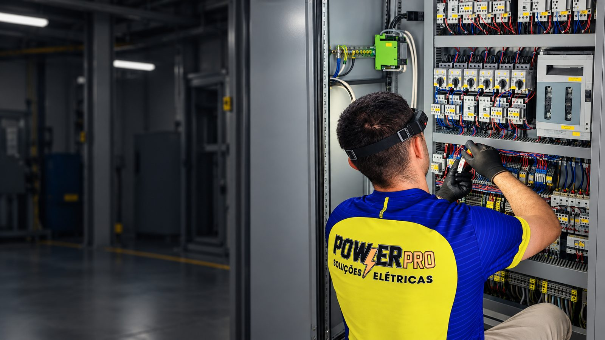

Eletricista Industrial · Novo Hamburgo e Região
Eletricista industrial para quando sua operação não pode parar.
Manutenção, instalação e adequação elétrica industrial com diagnóstico técnico no local e documentação quando necessário.
Diagnóstico no local RT quando necessário Atendimento regional
